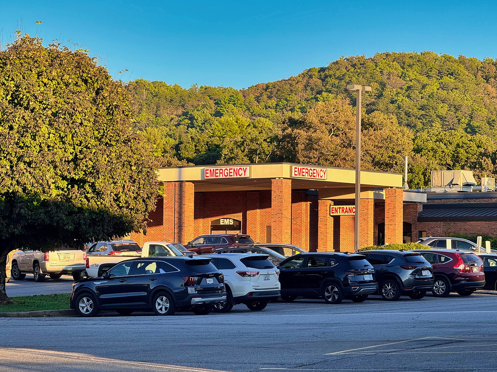

Экстренная медпомощь в США: как работают 911, скорая, приёмный покой (ER) и urgent care
В США звонок в 911 при экстренной ситуации бесплатен с любого телефона, а приёмный покой (ER) по закону обязан осмотреть и стабилизировать любого — независимо от гражданства и способности платить (EMTALA, 1986). Но скорая не бесплатна, а визит в ER без страховки обходится дорого. Этот справочник только по фактам объясняет 911 и 988, разницу между ER и urgent care, расходы и практические правила для иммигрантов.

Для многих недавно приехавших в Америку узбекистанцев медицинская система кажется сложной: когда звонить в 911, куда ехать — в ER или в urgent care, сколько стоит скорая и что будет без страховки? Ответы ниже опираются только на официальные источники (FCC, CMS, HHS, IRS, NIH). Это справочная информация, а не медицинский совет.
911 — экстренный номер
911 — единый экстренный номер США: звонок попадает к диспетчеру полиции, пожарных или скорой (EMS). Звонок бесплатен с любого телефона. По правилам FCC операторы обязаны пропустить вызов 911 даже с телефона без SIM-карты или неактивированного. Звоните в 911 только при угрозе жизни или органам — боль в груди, нехватка воздуха, сильное кровотечение, потеря сознания, признаки инсульта или судорог, отравление, тяжёлая травма. Во многих районах доступна отправка SMS на 911; совет FCC: «Звоните, если можете; пишите, если не можете».
988 и линия при отравлениях
При психическом кризисе или суицидальных мыслях звоните или пишите на 988 — Suicide & Crisis Lifeline бесплатна, конфиденциальна, работает круглосуточно и предлагает перевод более чем на 240 языков. При отравлении (лекарства, бытовая химия) национальная линия Poison Help — 1-800-222-1222, бесплатная и круглосуточная. Эти номера стоит заранее сохранить в телефоне.

EMTALA: экстренная помощь всем
По закону EMTALA (Emergency Medical Treatment and Labor Act, 1986) любая больница, участвующая в Medicare и имеющая приёмный покой, обязана провести медицинский осмотр каждому обратившемуся и — если выявлено экстренное состояние (включая роды) — стабилизировать его. Как указывает CMS, это действует «независимо от способности платить», а также независимо от гражданства и иммиграционного статуса. Важная оговорка: EMTALA гарантирует осмотр и стабилизацию, но не делает помощь бесплатной — счёт всё равно может прийти.
ER против urgent care и семейного врача
Приёмный покой (ER) работает круглосуточно и принимает угрожающие жизни состояния (боль в груди, признаки инсульта, сильное кровотечение, тяжёлые травмы, отравление); очередь обычно длинная, стоимость самая высокая. Urgent care — для не угрожающих жизни, но не терпящих отлагательства случаев (простуда, грипп, боль в ухе, мелкие порезы и растяжения); очередь короче, стоимость намного ниже. Для рутинных или хронических проблем, рецептов и консультаций дешевле всего семейный врач (primary care) или телемедицина. По данным NIH, та же помощь в ER может стоить в 2–3 раза дороже или больше, чем в кабинете врача.
Скорая не бесплатна
Скорая оплачивается отдельно. Наземная скорая обычно стоит от нескольких сотен до нескольких тысяч долларов (базовый тариф плюс оплата за милю); воздушная может стоить гораздо дороже — точная сумма зависит от ситуации и штата. Скорая часто вне страховой сети, что порождает неожиданные счета. Закон No Surprises Act (действует с 2022 года) запрещает неожиданные счета за большинство экстренных услуг и за ВОЗДУШНУЮ скорую вне сети; однако НАЗЕМНАЯ скорая выведена из-под этого закона — некоторые штаты добавляют собственную защиту.
Расходы без страховки и как уменьшить счёт
Даже без страховки вас сначала лечат, а счёт выставляют потом. Некоммерческие больницы по требованию IRS Section 501(r) обязаны иметь письменную Политику финансовой помощи, не требовать оплату до экстренной помощи и не взимать с имеющих право на помощь пациентов больше суммы, обычно выставляемой застрахованным. Практические шаги: попросите в больнице заявление на финансовую помощь (charity care), запросите детальный счёт (itemized bill), попросите скидку или план рассрочки (payment plan).
Практические правила для иммигрантов
При реальной экстренной ситуации вас будут лечить независимо от иммиграционного статуса (EMTALA). Носите с собой удостоверение личности и страховую карту (если есть) — они не останавливают лечение, но ускоряют регистрацию. Больницы, получающие федеральные средства (Medicare/Medicaid), обязаны предоставить бесплатного квалифицированного переводчика по Разделу VI Закона о гражданских правах и Разделу 1557 Affordable Care Act — за это не берут плату, и вы не обязаны использовать родственника или друга в качестве переводчика. Emergency Medicaid покрывает только само экстренное состояние для тех, кто подходит по доходу, но не имеет права на полный Medicaid из-за иммиграционного статуса, — а не последующее лечение после стабилизации.
Важные номера
911 — полиция, пожарные, скорая (бесплатно с любого телефона). 988 — линия при психическом кризисе и суицидальных мыслях (звонок/SMS/чат, круглосуточно, на многих языках). 1-800-222-1222 — национальная линия помощи при отравлениях (Poison Help), бесплатная и круглосуточная.
Почему это важно
В экстренной ситуации быстрое и правильное решение — куда звонить, куда ехать и какие у вас права — экономит и здоровье, и деньги. Для семей диаспоры ключевой факт прост: при реальной экстренной ситуации помощь не зависит от иммиграционного статуса, но она не бесплатна — поэтому после лечения спрашивайте о финансовой помощи и рассрочке. Этот справочник приводит только проверенные факты и не заменяет медицинскую или юридическую консультацию.

Источники
- FCC — 911 and E911 Services (free from any phone, incl. no-SIM; text-to-911 'call if you can, text if you can't')
- CMS — Emergency Medical Treatment & Labor Act (EMTALA), 1986: screen and stabilize regardless of ability to pay
- NIH MedlinePlus — When to use the emergency room (ER vs urgent care; ER costs 2–3x or more)
- CMS — No Surprises Act (effective 1 Jan 2022; ground ambulances excluded)
- IRS — Charitable Hospitals: Section 501(r) financial assistance requirements
- HHS — Limited English Proficiency: free interpreter rights (Title VI; ACA Section 1557)
- SAMHSA — 988 Suicide & Crisis Lifeline